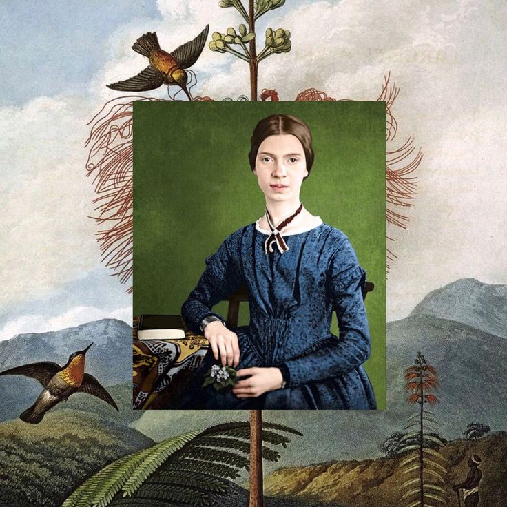

 |
Emily Dickinson nació el 10 de diciembre de 1830 en Amherst, Massachusetts (Estados Unidos), en el seno de una familia acomodada y culta. Su padre, el abogado Edward Dickinson, fue miembro del Congreso y tesorero del Amherst College. Su madre, Emily Norcross, se dedicó al cuidado del hogar y a criar a Emily y sus dos hermanos (Austin, el mayor, y Lavinia, la pequeña). Ambos se encargaron de que sus tres hijos recibieran una buena educación, de ahí que, en 1840 –dos años después de que la Academia de Amherst aceptara mujeres— matricularon a Emily para que empezara el colegio. |
Durante siete años, Emily estudió literatura, historia, religión, geografía, matemáticas, biología, griego y latín. Además, daba clases de piano con su tía, tenía canto los domingos y aprendió floricultura, horticultura y jardinería. Tras atender a una clase de botánica, Emily quedó tan fascinada que empezó a elaborar su propio herbario, en el que acumuló cientos de plantas y flores prensadas, con sus respectivos nombres en latín.
|
En los siguientes años, la obra de Emily Dickinson empezó a ver la luz. Los poemas se publicaron en varias ediciones, siguiendo un orden completamente arbitrario (ya que la autora nunca puso fecha a sus versos) y quedando divididos en cuatro grupos: Vida, Naturaleza, Amor y, por último, Tiempo y eternidad. La edición en inglés más completa de la obra de Dickinson se publicó en 1998, más de cien años después de la obra de la autora. Se desconoce la razón por la que Emily Dickinson se negó a compartir sus creaciones en vida. Muchos apuntan a que, más allá del éxito, lo que la autora buscaba era perfeccionar y desarrollar al máximo su voz poética.
|
|
La poesía de Emily Dickinson es única y prácticamente inclasificable. Por eso, sus versos han ido ganando importancia y reconocimiento a medida que han pasado las décadas, acrecentando la sensación de que Emily Dickinson escribió para los lectores del futuro. “Si tengo la sensación física de que me levantan la tapa de los sesos, sé que eso es poesía”, afirmó la autora. Su legado, sin duda alguna, hace más que justicia a esa apasionante experiencia que ella definió como poesía. |